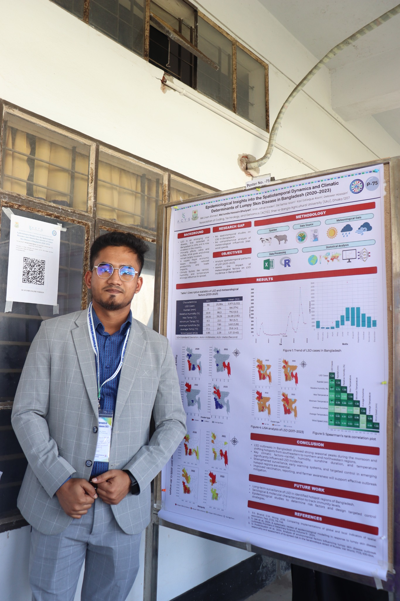

L-citrulline and meat quality
Examining meat production, meat attributes and nutritional composition.
Veterinarian & Researcher advancing animal health, sustainable production, meat quality and public health through interdisciplinary science.
Combining laboratory science, field epidemiology, data analysis and applied animal production research.
I am a veterinarian and animal science researcher trained at Sher-e-Bangla Agricultural University, Bangladesh. My work spans meat production and quality, infectious disease epidemiology, antimicrobial resistance, food safety and One Health.
Through research appointments and multidisciplinary collaborations, I contribute to experimental animal studies, biological sample processing, statistical analysis, scientific manuscripts and research capacity-building initiatives.
My long-term aim is to develop evidence that strengthens animal health, sustainable livestock production and public-health protection.
From experimental nutrition and meat science to surveillance, infectious diseases and food safety.
Examining meat production, meat attributes and nutritional composition.
Exploring dietary strategies for fat reduction and improved meat quality.
Studying growth performance and hematological parameters.
Investigating the effects of pre-slaughter stressors on broiler meat quality.
Spatiotemporal patterns and climatic determinants in Bangladesh.
Evidence synthesis and cross-sector investigations of public-health risks.
Sher-e-Bangla Agricultural University · CGPA 3.87/4.00 · Ranked 1st
Thesis: Impact of L-citrulline on meat production and quality.
Sher-e-Bangla Agricultural University · CGPA 3.63/4.00 · Ranked 10th
Academic report on antibiotic usage in poultry farms in Narayanganj.
Sher-e-Bangla Agricultural University
Association of Coding, Technology & Genomics
Course instruction in research internships, GIS and remote sensing with R, BioRender and reference management.
Veterinary hospitals, diagnostic laboratories, poultry operations and wildlife institutions in Bangladesh and India.
Co-Leader, Poultry Professional Bangladesh (SAU Unit); General Secretary, Badhan SAU Unit.
Publication records are transcribed from the uploaded CV. A repeated lumpy skin disease entry has been consolidated; publication metadata should be verified before public release.
* Manuscripts under review are not published papers. Some citations in the original CV contain incomplete or inconsistent metadata.
Bacterial culture and staining, antimicrobial susceptibility testing, DNA/RNA extraction, PCR, qPCR, RT-qPCR, gel electrophoresis, ELISA, MALDI-TOF and cell culture.
R, SPSS, Microsoft Excel, ArcGIS, statistical analysis and research data visualization.
Meat proximate analysis, experimental animal studies, KoboToolBox, research writing, EndNote and scientific communication.
Ministry of Science and Technology, Bangladesh; research on production traits and meat quality in crossbred chickens.
Poultry Convention 2023, Poultry Professional Bangladesh.
1st Scientific Conference of Veterinary and Animal Sciences, University of Rajshahi.
31st Annual Scientific Conference, Bangladesh Society for Veterinary Education and Research.
Research communication, conferences and professional milestones.

Open to academic collaboration, interdisciplinary research and scientific exchange.